Esta página se ha traducido automáticamente. Si algo no suena bien, avísame.
Consejos tecnológicos gratuitos para Bridlington y el East Riding
Ayuda sencilla con teléfonos, ordenadores y cómo mantenerte seguro en línea. Gratis, sin necesidad de inscribirse.
Últimos consejos
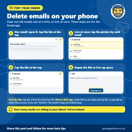
Delete Emails on Your Phone
Is your email inbox full of old messages, offers and newsletters? Here's how to clear them out on your phone, using the Gmail app.
Halloween
With Halloween tonight, I wanted to share a few ways tech can help, whether you're looking forward to trick or treaters or would rather have a quiet...
Media Literacy Week Day 8
It's the last day of Global Media and Information Literacy Week, so I wanted to finish with some free resources for helping children and grandchildren...
Media Literacy Week Day 7
It's day seven of Global Media and Information Literacy Week, and today's tips are about telling adverts and fake reviews apart from genuine advice.

NHS App for Carers and Families
Do you help a parent, partner or family member with their health? With their permission, you can order their prescriptions and book their appointments...

Online Networking Day
Today is World Online Networking Day, which is all about making and keeping connections online. Whether you'd like to get back in touch with old...
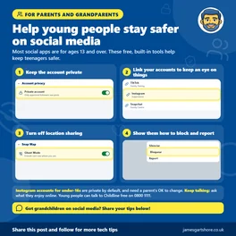
Young People on Social Media
If you've got children or grandchildren on social media, here are some simple, free ways to help keep them safer. Most social media apps are for ages...
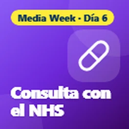
Media Literacy Week Day 6
It's day six of Global Media and Information Literacy Week, and today I wanted to talk about health information online.

Día Mundial del Derrame Cerebral
Today is World Stroke Day, so I wanted to share how to spot the signs of a stroke, and how your phone can help in an emergency.

Family Learning
With half term here and October being Family Learning Festival month, I wanted to share some free apps and websites you can enjoy with the...
Media Literacy Week Day 5
It's day five of Global Media and Information Literacy Week, and today's tips are about WhatsApp forwards and chain messages.
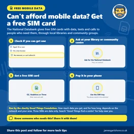
National Databank Free SIM
Did you know there's free mobile data for people who can't afford it? The National Databank, run by the charity Good Things Foundation, gives out free...
Media Literacy Week Day 4
It's day four of Global Media and Information Literacy Week, and today I wanted to share some built-in Facebook tools that let you take more control...

What the NHS App Can Do
Tired of ringing the doctors at 8am? The free NHS App puts lots of your GP services on your phone.

Add a Bank Card to Google Wallet
Did you know you can pay with your phone instead of your bank card? Adding your card to Google Wallet means you can still pay if you've left your purse...
Media Literacy Week Day 3
It's day three of Global Media and Information Literacy Week, and today's tip is about where you get your news.
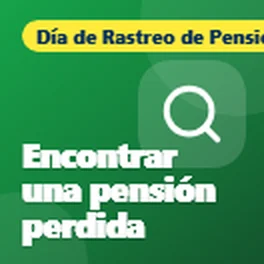
Día de Rastreo de Pensiones
Today is National Pension Tracing Day, so I wanted to share some free government tools that can help you track down any pensions you may have lost...

Get Online Week Day 7
It's the last day of Get Online Week, so I wanted to finish by sharing where you can get free help with technology, because you don't have to work it...
Media Literacy Week Day 2
It's day two of Global Media and Information Literacy Week, and today I wanted to share some free tools for checking whether a photo is real or made by AI.

QR Code Payment Safety
A quick warning about QR codes, those square barcodes you scan with your phone camera. Scammers stick fake ones over real ones, especially on car park...
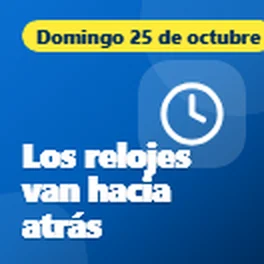
Clocks Go Back
Just a quick reminder that the clocks go back an hour tonight, at 2am on Sunday morning. That means an extra hour in bed, but also a few clocks to check.

Get Online Week Day 6
It's day six of Get Online Week, and today's tips are about staying close to family and friends.
Media Literacy Week Day 1
Today is the start of Global Media and Information Literacy Week, which is all about being able to tell what's real and what's not online. With so many...

Get Online Week Day 5
It's day five of Get Online Week, and today I wanted to share some help for anyone who doesn't have a device or internet at home.
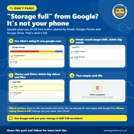
Google Storage Full
Has your phone or email told you "your Google storage is full"? Don't panic: it isn't your phone that's full. It's the free online space Google gives you.

Vístete de rosa
Today is Wear It Pink day for Breast Cancer Now, so I wanted to share some free ways your phone can help remind you to check your chest regularly.
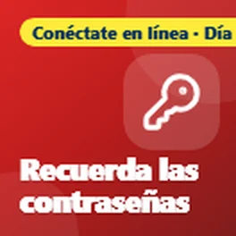
Get Online Week Day 4
It's day four of Get Online Week, and today I wanted to talk about passwords, because they're something almost everyone struggles with.
Phone Still Safe
I wanted to share a quick check you can do to see if your phone is still safe to use for things like banking and email.

Stammering Awareness Day
Today is International Stammering Awareness Day, so I wanted to share some free tech that can make life a bit easier for anyone who stammers.
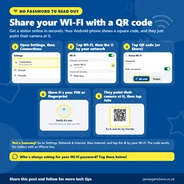
Share Wi-Fi with a QR Code
When family or friends visit and ask for your Wi-Fi password, there's no need to read out a long jumble of letters and numbers. Most Android phones can...
Get Online Week Day 3
It's day three of Get Online Week, and today's tips are about free tools that help you stay safe from scams.
Phone Stolen
I wanted to share what to do if your phone is ever lost or stolen, and a couple of things worth doing now, just in case.
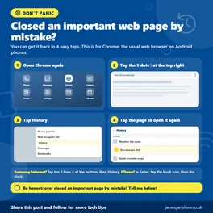
Reopen a Closed Web Page
Have you ever closed an important web page on your phone by mistake, like a form you were filling in or a page you needed? Don't panic, you can usually...
Switch Phone Network
I wanted to share a really easy way to switch your mobile phone network and keep your number, without having to ring up and be talked into staying.

Braille Week Day 7
It's the last day of National Braille Week, so I wanted to finish with some ways technology is making braille easier to learn and use.

Get Online Week Day 2
It's day two of Get Online Week, and today I wanted to share some free places where you can learn online skills at your own pace.

Libros electrónicos de la biblioteca
With the dark evenings drawing in, I wanted to share something lovely that a lot of people don't know about: you can borrow eBooks and audiobooks from...
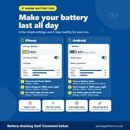
Make your battery last all day
With the colder days coming in, here are a few simple ways to make your phone battery last longer, on both iPhone and Android.

Braille Week Day 6
It's day six of National Braille Week, and today's tips are for computers and laptops.

Get Online Week
This week is Get Online Week, a national campaign to help more people feel confident using the internet. Being online has become part of everyday life,...
Voice Clone Scam
I wanted to share a warning about a scam that's becoming more common: phone calls using a copy of a family member's voice.

Braille Week Day 5
It's day five of National Braille Week, and today I wanted to share how you can control your phone using just your voice.

Dyspraxia Day 7
Es el último día de la Semana de Concienciación sobre la Dispraxia, y quería terminar compartiendo algo de apoyo para adultos y estudiantes, porque la dispraxia no se detiene...

Landline Switchover
Quería compartir algo importante para cualquiera que tenga una alarma personal, como un colgante o una alarma de caída, que funcione a través de la línea telefónica de su casa.

Braille Week Day 4
Hoy es el cuarto día de la Semana Nacional del Braille, y los consejos de hoy son sobre libros, radio y televisión que puedes disfrutar escuchando.

Cut Your Bills
Hoy es el Día Internacional para la Erradicación de la Pobreza, así que quería compartir algunas herramientas gratuitas que pueden ayudarte a reducir el coste de tu banda ancha...

Dyspraxia Day 6
Hoy es el sexto día de la Semana de Concienciación sobre la Dispraxia, y hoy quería compartir algo de tecnología que ayuda a moverse.

Braille Week Day 3
Hoy es el tercer día de la Semana Nacional del Braille, y hoy quería compartir algunas formas gratuitas de hacer que tu teléfono o ordenador te lean cosas en voz alta.

Dyspraxia Day 5
Hoy es el quinto día de la Semana de Concienciación sobre la Dispraxia, y los consejos de hoy son todos sobre moverse.

Food Apps
Hoy es el Día Mundial de la Alimentación, así que quería compartir algunas aplicaciones gratuitas que pueden ayudarte a ahorrar dinero en comida y a evitar que la buena comida se desperdicie.

Restart a Heart
Hoy es el Día de Reiniciar un Corazón, así que quería compartir algunas aplicaciones y sitios web gratuitos que pueden ayudarte a aprender RCP y estar preparado para ayudar si alguien se le para el corazón.

Braille Week Day 2
Es el segundo día de la Semana Nacional del Braille, y hoy también es el Día de Seguridad del Bastón Blanco, así que quería compartir algunas aplicaciones gratuitas que ayudan a las personas con pérdida de visión...

Dyspraxia Day 4
Es el cuarto día de la Semana de Concienciación sobre la Dispraxia, y hoy quería compartir algunas herramientas gratuitas que facilitan la lectura.

Fake Parcel Texts
Quería compartir una advertencia sobre los mensajes falsos de entrega de paquetes, ya que son una de las estafas más comunes en este momento.

Dyspraxia Day 3
Es el tercer día de la Semana de Concienciación sobre la Dispraxia, y los consejos de hoy son para cualquiera que tenga dificultades con la escritura.

Phone Eyesight Features
Esta semana es la Semana Nacional del Braille, así que quería compartir algunas funciones gratuitas en tu teléfono que pueden marcar una gran diferencia si tu vista no es como...

Old Phone or Laptop
Hoy es el Día Internacional de Residuos de Aparatos Eléctricos y Electrónicos, lo que es un buen recordatorio de todos esos teléfonos, tabletas y portátiles viejos que están en los cajones. La mayoría de nosotros tenemos...

Dyspraxia Day 2
Es el segundo día de la Semana de Concienciación sobre la Dispraxia, y hoy quería compartir algunas herramientas gratuitas que ayudan a mantenerte organizado.

Phone in an Emergency
Hoy es el Día Internacional de la Reducción del Riesgo de Desastres, así que quería compartir algunas funciones de tu teléfono que realmente podrían ayudar en una emergencia....

Arthritis Day
Hoy es el Día Mundial de la Artritis, así que quería compartir algunas funciones de tu teléfono y portátil que pueden hacer la vida mucho más fácil si tienes dolor, rigidez o...

Semana de Dispraxia
Esta semana es la Semana de Concienciación sobre la Dispraxia, así que quería compartir algunas formas en que la tecnología puede ayudar a los niños con dispraxia. La idea es usar la tecnología para ayudarles...

Día de la Salud Mental
El Día Mundial de la Salud Mental fue el 10 de octubre, así que quería compartir algunas cosas sencillas que tu teléfono ya puede hacer para ayudarte a sentirte un poco más tranquilo y más...

Online Communities
Quería compartir algo que mucha gente no se da cuenta que existe.

Find a Bad App
Siguiendo mi publicación sobre los anuncios emergentes que dan miedo, aquí tienes qué hacer si los anuncios siguen apareciendo en tu teléfono Android incluso cuando no estás usando ninguna aplicación.

Scary Pop-up Ads
Quería compartir un consejo sobre esos anuncios emergentes que a veces aparecen en los teléfonos.

Sat Nav Update
Aquí tienes un consejo rápido para cualquiera que todavía use un navegador por satélite en el coche.

Preseleccionado para los Premios Time2Volunteer 2026
Quería compartir un poco de noticias. Recientemente fui preseleccionado en los Premios Time2Volunteer 2026 por el voluntariado que hago con un servicio de soporte técnico local...

Computer Safety
Quería compartir algunos consejos sobre cómo mantener tu ordenador seguro, porque mucha gente termina pagando por antivirus que en realidad no necesitan.

¿Qué es un código QR?
Solo quería compartir un consejo rápido sobre códigos QR.

Heating Timers
Con el clima más frío que se acerca, ahora es un buen momento para comprobar sus temporizadores de calefacción y agua caliente.

Heating Check
Con el invierno acercándose, ahora es un buen momento para probar su calefacción, especialmente si no se ha usado mucho este año.
Navegue por consejos por tema
- Scams and staying safe (9)
- Fake news and online info (8)
- Health and wellbeing (22)
- Money (4)
- Getting online and staying connected (11)
- Noticias (1)
- Everyday tech (16)
Lo que la gente dice
Muchísimas gracias, señor
Sí, sin duda útil, gracias. Lo compartiré con quien crea que le pueden servir tus consejos 😃
Útil, gracias
Recibe nuevos consejos por correo
Un correo breve cuando publico un consejo nuevo. Gratis, y puedes darte de baja cuando quieras.
Recibirás un correo para confirmar. Los correos los envía follow.it y cada uno tiene un enlace para darte de baja.